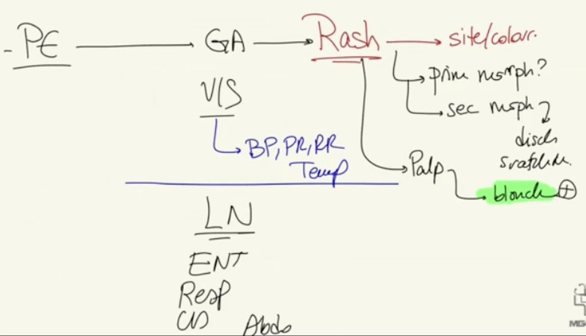

Source: Dr. Amir workshop — Med workshop 2 - 2026 / CLASS 5 UNWELL (Aug 2026 drop) · Specialty: general_practice
A 27-year-old man presents feeling unwell for 8 days with a rash. Tasks: take a focused history (4 minutes), ask the examiner for the physical examination, then explain the diagnosis and differentials. This is a red-flag fever + rash station - meningococcaemia must be actively excluded before settling on the leading diagnosis of primary HIV seroconversion in a man who has sex with men (MSM).
Open-ended question elicits two complaints - feeling unwell/fever and a rash - both of which must be explored. Respond empathetically before proceeding.
Do not spend the whole station on fever - the rash is the diagnostic clue.
Pattern: a non-itchy, non-painful, maculopapular rash on the trunk is classic for HIV seroconversion, and also fits secondary syphilis, viral exanthem (EBV) and measles.
Travel (negative). EBV screen (sore throat, flu-like symptoms). STI screen: sexually active (yes), condoms (no) - which mandates a full three-part sexual history.
MSM + multiple casual partners + unprotected anal sex + no PrEP + prior STIs = fever and rash represent HIV seroconversion until proven otherwise.
Meningococcaemia (exclude first): dizziness, headache, neck stiffness, photophobia, non-blanching rash (this rash blanches - reassuring).
Also screen: urethritis/epididymo-orchitis (dysuria, discharge, scrotal swelling, genital rash/chancre), ENT, GI, hepatitis, IV drug use, joint pain, immunisation history (measles/rubella), and a malignancy screen (weight/appetite loss, lumps, night sweats, family history).
Vital signs: T 38 degrees C, otherwise normal. Rash: red maculopapular on chest and back, no blisters/discharge/scratch marks, blanching (argues against purpuric/meningococcal rash). Generalised lymphadenopathy (key finding). ENT, respiratory, CVS and abdominal exam normal; urine dipstick normal.
Primary diagnosis explained with reasons: symptoms (fever, body aches, rash) consistent with HIV seroconversion; high-risk sexual behaviour; not on PrEP.
Differentials: secondary syphilis (very common in MSM, identical rash), herpes; meningococcaemia (excluded - no neck stiffness/photophobia, blanching rash); EBV, measles; hepatitis B/C; infective endocarditis; leukaemia/lymphoma; febrile drug reaction.
Plan: HIV testing, syphilis serology and full STI screen, FBC and LFTs, with early review; advise condom use meanwhile.

Reviewed by: history-taking-expert (Australian clinical supervisor) · fact-checked against the irStudy medical textbook RAG index.